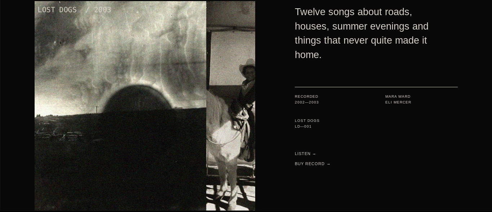
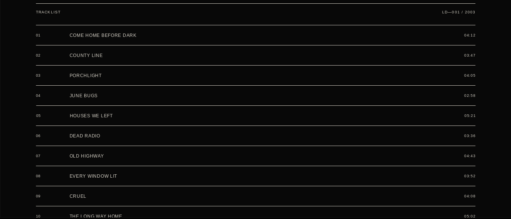
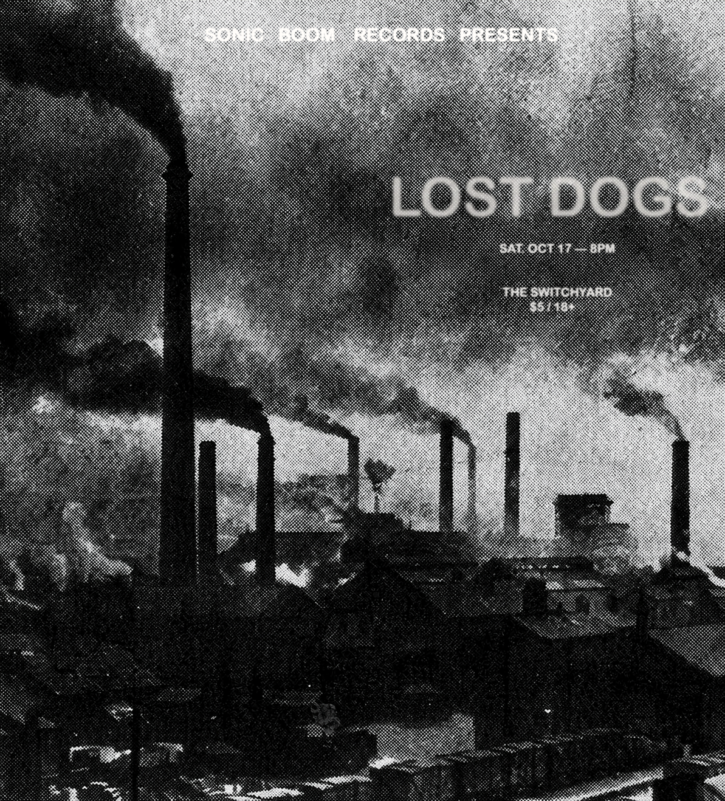
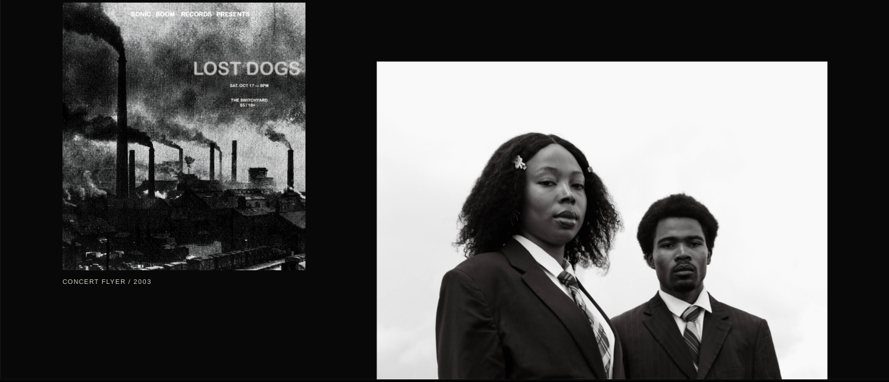
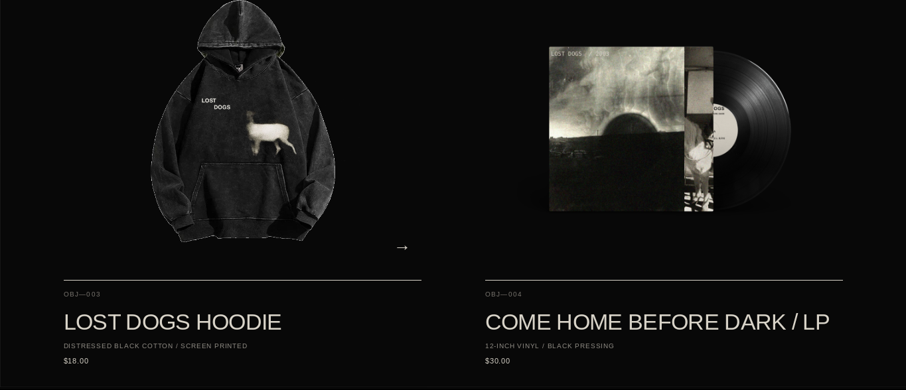

PROJECT / 01
2026
LOST DOGS
A fictional music identity and responsive website created for an alternative duo, developed across web, print, merchandise and physical media.

PROJECT OVERVIEW
MUSIC, IDENTITY
+ DIGITAL WORLD
Lost Dogs was created as a fictional alternative music duo with a visual identity inspired by early-2000s music culture, distressed photography, archival print material and restrained typography.
The project explores how one visual identity can remain consistent across a responsive website, album presentation, merchandise, concert graphics and physical media.
01
WEBSITE DESIGN
RESPONSIVE
EXPERIENCE


The website was designed as a multi-page artist experience, combining oversized typography, restrained layouts and subtle JavaScript interactions while remaining responsive across desktop and mobile screens.
02
VISUAL IDENTITY
PRINT +
ARCHIVE


Concert graphics, photography and archival material were used to extend the fictional identity beyond the website while maintaining the same distressed, understated visual language.
03
MERCHANDISE
PHYSICAL
IDENTITY

Apparel and vinyl concepts were designed to carry the Lost Dogs identity into physical objects, creating a cohesive system across the music, website and merchandise.
PROJECT OUTCOME
ONE IDENTITY.
MULTIPLE MEDIUMS.
Lost Dogs became an exploration of combining front-end development, graphic design and art direction within a single cohesive fictional brand.
VIEW LIVE SITE →